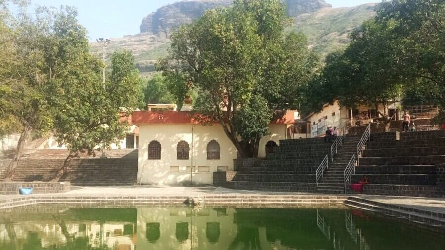

West Bengal
Gangasagar: The Great Confluence
Welcome to Gangasagar, the sacred Tirtha where the holy Ganga, after a long journey from her Himalayan source, finally merges with the ocean. This great confluence is more than a geographical point; it is a profound symbol of the individual soul (*jīvātman*) merging with the infinite cosmic consciousness (*paramātman*). A pilgrimage here, especially on Makar Sankranti, is considered an act of immense spiritual merit.
The Puranic Origin: Liberation of the Sagarputras
The *Ramayana* and *Mahabharata* narrate the story of King Sagara and his 60,000 sons. During an Ashwamedha Yajna, the sons wrongfully accused the great sage Kapila Muni of stealing the sacrificial horse and were instantly burnt to ashes by the power of his meditative gaze. For their souls to attain liberation, the water of the celestial river Ganga was required. Generations later, King Sagara's descendant, Bhagiratha, performed severe austerities and succeeded in bringing Mother Ganga down to earth. She flowed over the ashes of the Sagarputras at this very spot, granting them *mokṣa*.
Key Spiritual Experiences
The Holy Dip (Sagar Snan): The central ritual of the pilgrimage is the holy dip at the confluence of the Ganga and the Bay of Bengal. It is famously said, *"Sab tirath bar bar, Gangasagar ek bar"* (One can visit other Tirthas repeatedly, but a single visit to Gangasagar is equivalent). Taking this bath, especially during the auspicious time of Makar Sankranti, is believed to wash away the sins of a lifetime.
Worship at Kapila Muni Temple: After the holy dip, pilgrims proceed to the temple dedicated to the great sage Kapila Muni. Offering prayers here is an essential part of the yatra, acknowledging the sage's pivotal role in the liberation of the Sagarputras and the establishment of this sacred Tirtha.
Makar Sankranti Mela: The Gangasagar Mela, held annually in January, is the second-largest spiritual gathering in India after the Kumbh Mela. Millions of devotees, monks, and ascetics throng to this island to take the holy dip, creating an atmosphere of intense and unparalleled devotion.